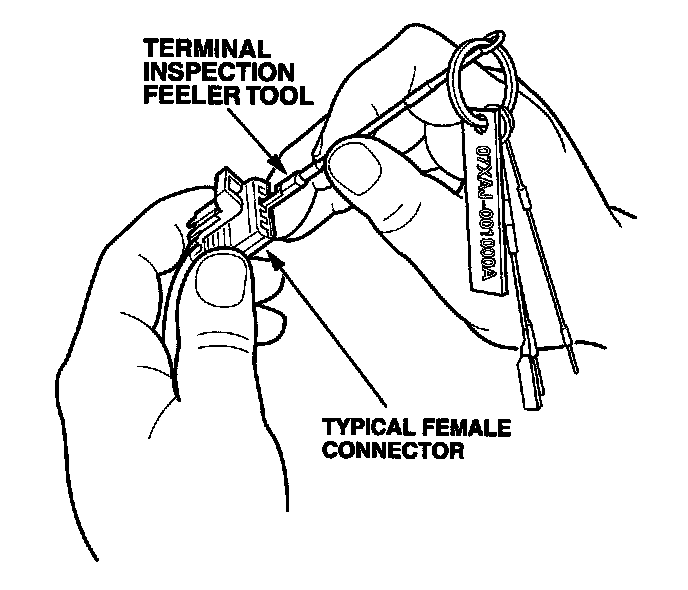

Checking For Poor Fit Terminals
CHECKING FOR POOR FIT OF TERMINALSLoose terminal fit can cause a number of intermittent problems in electrical circuits. By using the Terminal Inspection Feeler Tool Set you can inspect the terminal fit between the two matching connectors without removing the terminals from the connector body.
1. Find the terminal tool that best matches the male terminal in the mating connector.
2. Insert the terminal tool into the female terminal, and then remove the terminal tool.
NOTE: Make sure you do not select a terminal tool that is larger than the mating male terminal because it would spread the female terminal and cause a loose fit.

3. Compare the drag to the other terminals in the connector. If the drag is less, replace the terminal with a replacement terminal from the appropriate terminal repair kit.